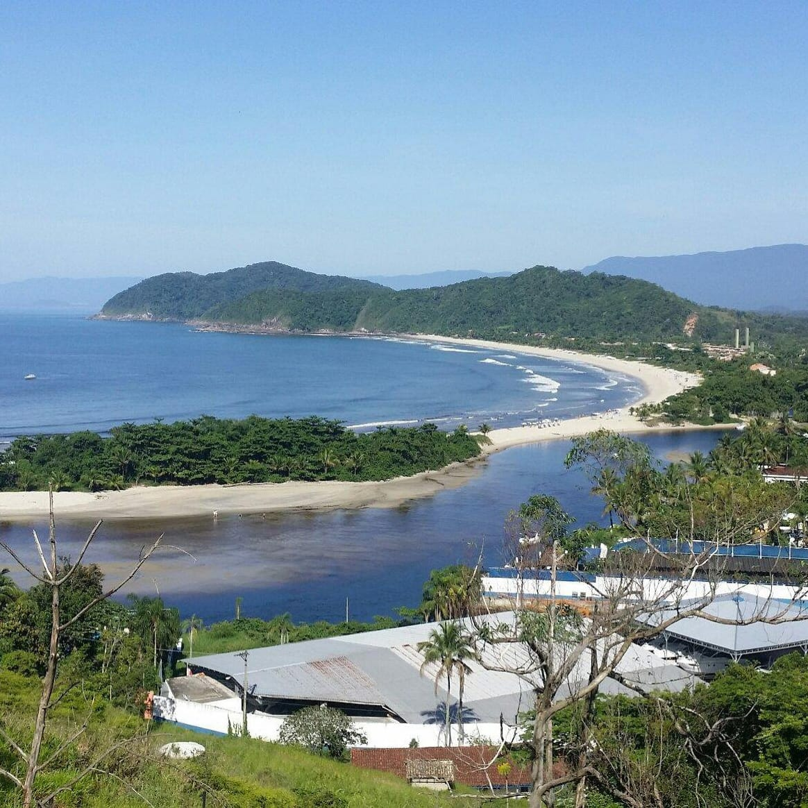
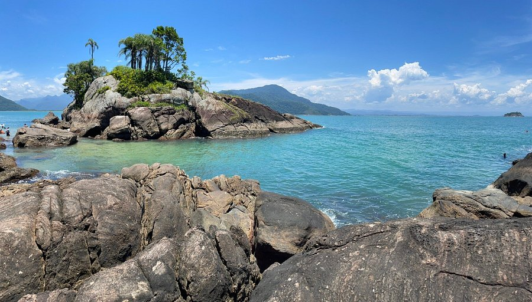
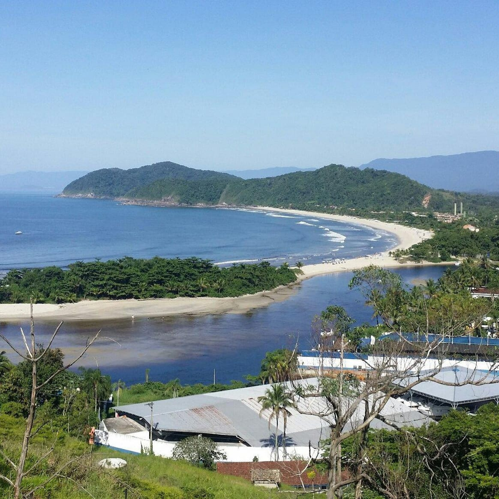
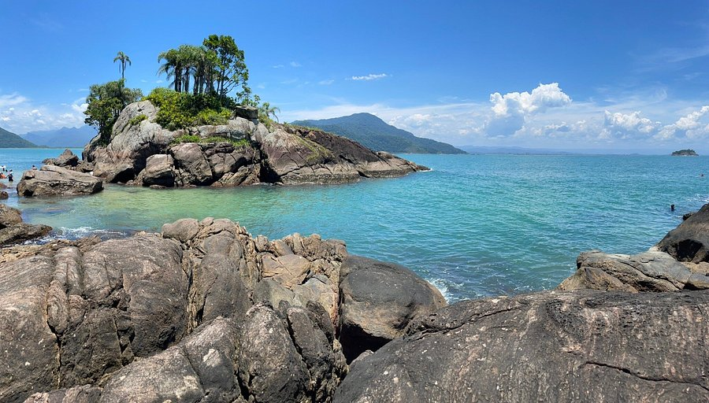

Conheça Peruíbe
Peruíbe é um município brasileiro localizado no estado de São Paulo, na Região Metropolitana da Baixada Santista, no litoral sul do estado. O município é reconhecido pelas belas e extensas praias, pelo turismo ecológico e pelo turismo rural.
O termo "Peruíbe", segundo o jornalista e escritor Silveira Bueno, é um vocábulo indígena que significa "no rio dos tubarões", juntando os termos tupis iperu (tubarão), 'y (rio) e pe (em). Consta, porém, em alguns documentos, que esse nome estaria associado ao modo como José de Anchieta se referia ao lugar, chamando-o de "Tapirema do Peru", por suas semelhanças com a região peruana, onde os jesuítas haviam enfrentado dificuldades no exercício da catequese.
Ver Fotos
 


